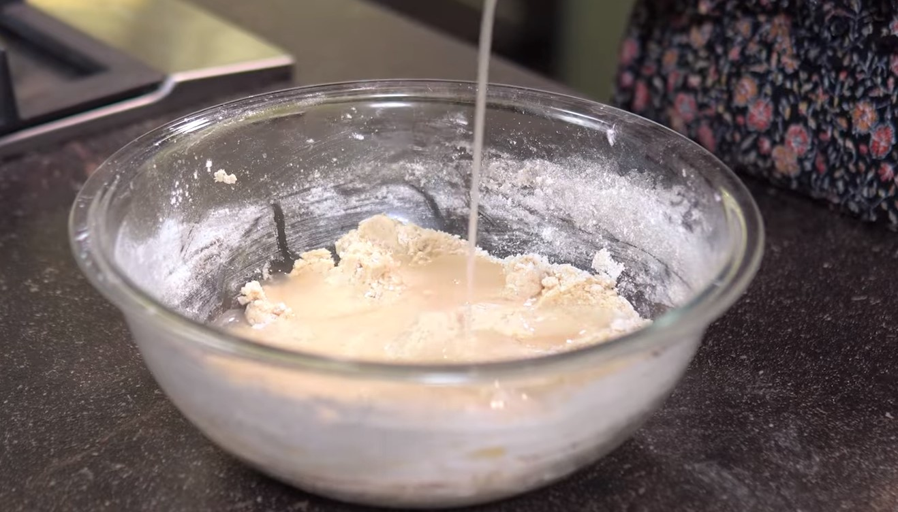
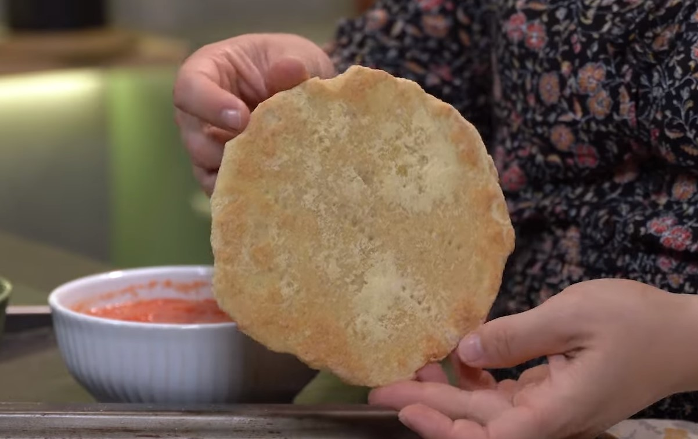

INGREDIENTES SECOS
½ xícara de farinha de aveia
1 xícara de farinha de grão de bico
½ xícara de amido de milho
½ xícara de farinha de arroz
¼ xícara de polvilho doce
1 colher de chá de sal
2 colher de chá de fermento biológico seco
1 colher de chá de goma xantana
Fubá para polvilhar a bancada na hora de abrir a massa
INGREDIENTES MOLHADOS
1 xícara de água
¼ xícara de óleo de coco sem sabor
Em uma tigela misture o fermento, a água e deixe descansar 1 minutinho.
Adicione os ingredientes secos, um a um e vá mexendo até ter uma massa consistente
Em outra tigela misture o óleo de coco sem sabor com a goma xantana e reserve. (ajuda a dissolver a goma xanta)
Misture os ingredientes líquidos ao secos sempre mexendo.

Finalize com a mistura de óleo de coco sem sabor e goma xantana, sovando a massa para tudo incorporar.
Polvilhe fubá em uma forma, corte pequenas bolinhas de massa e vá abrindo com as mãos até chegar em um diâmetro aproximado de 15cm.
Aperte as bordinhas para ajustar o formato.
Deixe a massa descansar por 30 minutos (para crescer)
Leve para assar por 20 min em forno pré aquecido a 180ºC.
Ponto da massa assada

Coloque o molho de tomate cru, queijo vegetal e outros ingredientes
Leve ao forno novamente para finalizar. Temperatura mais alta para gratinar.
Essas massinhas podem ser recheadas na sequência ou podem ser congeladas e utilizadas posteriormente.
SUBSTITUIÇÕES POSSÍVEES, MAS NÃO RECOMENDADAS
Substitua aveia por farinha de arroz (irá mudar a textura da pizza)
Substitua a farinha de arroz por mais farinha de grão de bico